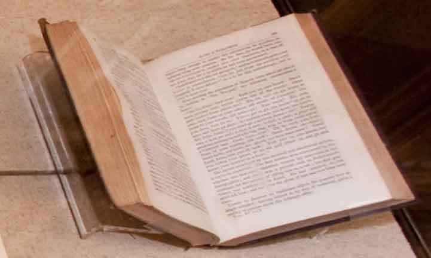

EDGAR ALLAN POE to JOHN PENDLETON KENNEDY
Autographed Letter, January 22, 1836
Poe struggled as a freelance writer and occasional editor. In this 1836 letter, he notes his $520 annual salary—equal to under $10,000 today. This would put Poe below the poverty level.
Boston Public Library, Rare Books and Manuscripts
Replica plate for ROBINSON CRUSOE by Daniel Defoe
19th century replica of a 1719 plate
During Poe’s career, artwork and title pages for books were published using plates like this one (a recreation of the first edition of Robinson Crusoe). Text-based pages utilized movable type. During his lifetime, major publishing innovations came about, but Poe was not able to reap the benefits.
Boston Public Library, Rare Books and Manuscripts
“THE OLD CORNER BOOK-STORE”
Boston Lithographic Society, 1904
At the time Poe published Tamerlane and Other Poems, Boston publishing was still young. By the end of Poe’s life, however, a new publishing house, best known as Ticknor & Fields, was emerging. The owners worked very closely with native authors and promoted them fiercely, helping to establish writers like Longfellow, Holmes, Whittier, and Hawthorne. The company later became Houghton-Mifflin but the home of their earlier incarnation, the Old Corner Bookstore, still stands today.
Boston Public Library, Rare Books and Manuscript
HARPER BROTHERS to EDGAR ALLAN POE
Letter, June 1836
Financial success for Poe was also hampered by the national economy. His only novel, The Narrative of Arthur Gordon Pym of Nantucket, was written specifically to take advantage of public tastes. Here, his publisher gave the advice to print the book “in a couple volumes, for that is the magical number.” Its publication was delayed by the Panic of 1837, one of several major bank depressions in the 19th century.
Boston Public Library, Rare Books and Manuscript

EDGAR ALLAN POE,
“X-ing a Paragrab,” in The Works of Edgar A. Poe, NY: J. S. Redfield, 1850,
vol. 4.
Originally published in Boston’s Flag of Our Union
newspaper in 1849, “X-ing a Paragrab” is one of Poe’s
lesser-known humor works. In the story, Poe satirizes the
ongoing rivalries in the cut-throat periodical industry. By
way of revenge, one editor steals a competitor’s collection
of the letter “O” in his moveable type collection. The
competitor is then forced to replace each “O” with the
letter “X.”
Boston Public Library, Rare Books and Manuscripts
"Antique Building: Corner of School and Washington Street"
Ballou's Pictorial, February 21, 1857.
Martin Murray (M. M.) Ballou, the founding editor of this heavily illustrated, Boston-based periodical, was also the editor of The Flag of Our Union, the paper in which Poe published his last works.
Boston Public Library, Rare Books and Manuscripts
Poe, Boston, and the Publishing Industry
Boston-raised writer Nathaniel Parker Willis wrote in the
1830s that Boston had "denied me patronage, abused me,
misrepresented me, refused me both character and genius."
Willis eventually became the highest-paid magazine writer
of his generation, though he did so in New York, not Boston.
Boston-born writer Edgar Allan Poe struggled to find a
city where he could be successful too. The publishing scene
in Boston was still developing. At the time Poe published
Tamerlane and Other Poems here in 1827, there were no
major publishing houses in the city. Book printers in Boston
were also retailers and, quite often, they were also the only
retailer that sold the books they printed, severely limiting
distribution. Those Boston-based printers who aimed for
better distribution competed with Hartford, Connecticut as
the publishing center in New England.
The provincial nature of Boston publishing limited the
distribution, success, and financial pay-off for Poe's first
book. Still, throughout the antebellum period, American
literature was growing, and publishing technology was
developing too. As new printing machinery was emerging,
however, other factors in the industry hampered the success
of American writers, including Poe.
Type Setter (Date unknown)
During Poe's career and through the 19th century, printers relied on techniques that dated back to Gutenberg. In this long letterpress era, movable type was arranged by hand, bound tightly, inked and printed.
Boston Public Library